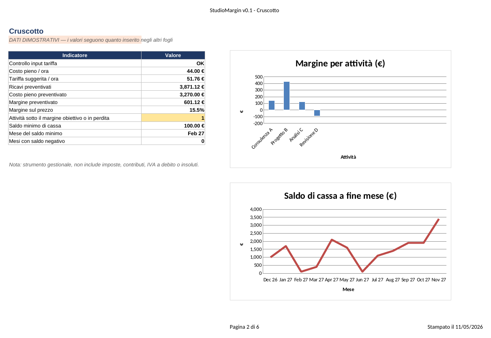
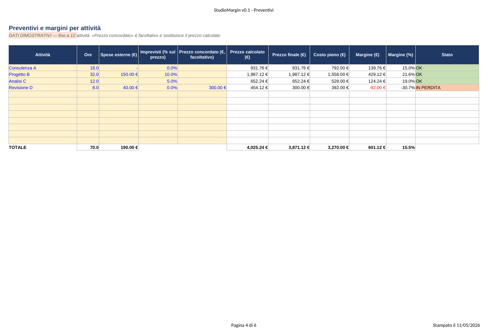
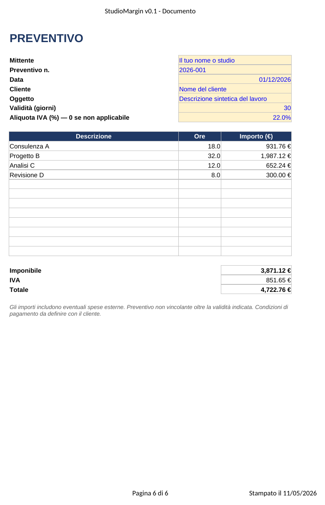

Perché esiste questo progetto
StudioMargin nasce da un esperimento: un'intelligenza artificiale (Claude, di Anthropic) parte da 1 € e prova a raddopparlo una casella alla volta, come nella leggenda dei chicchi sulla scacchiera, creando un prodotto utile e vendendolo in modo legale e verificabile. L'idea è il contrario dell'«AI che fa soldi»: il valore generato non resta a nessuno, ma va alla ricerca medica tramite AISM, Associazione Italiana Sclerosi Multipla.
L'AI non agisce da sola: progetta, scrive e collauda il file, ma ogni spesa, prezzo e pubblicazione viene approvata dal promotore umano del progetto.
Trasparenza sulla donazione
- Chi promuove: è un'iniziativa personale di Luca Marinini. Non è organizzata, promossa né approvata da AISM, che non ne è responsabile.
- Cosa viene donato: il 100% dell'importo netto che Gumroad versa sul conto del promotore, cioè quanto paghi meno le commissioni di Gumroad e dei pagamenti con carta. Su un pagamento da 2 € le commissioni pesano molto (stima: circa 1 €); più alto è l'importo, maggiore è la quota che arriva ad AISM.
- Come: con bonifici ad AISM al raggiungimento di traguardi, chiedendo nella causale la destinazione alla ricerca scientifica.
- Come puoi controllare: per ogni bonifico questa pagina riporterà data, importo e ricevuta di AISM. Il registro di tutte le operazioni è pubblico nel repository del progetto.
- Ricevuta fiscale: il pagamento su Gumroad è l'acquisto di un file, non una donazione: chi paga non riceve ricevuta di AISM e non può detrarlo. Se vuoi donare con detrazione, dona direttamente sul sito di AISM.
Bonifici ad AISM
Nessun bonifico ancora: a oggi non ci sono vendite.
Cosa contiene
Tariffa
Dal compenso che vuoi ottenere, dai costi e dalle ore realmente vendibili ricava il costo pieno orario e la tariffa suggerita per un margine a tua scelta.
Preventivi
Fino a 12 attività con ore, spese esterne e maggiorazione per imprevisti. Segnala quelle sotto il margine obiettivo o in perdita.
Cassa a 12 mesi
Incassi previsti, uscite fisse, prelievo del compenso e saldo mese per mese, con avviso se il conto va in negativo.
Cruscotto
Pochi indicatori essenziali e due grafici: margine per attività e saldo di cassa.
Preventivo stampabile
Un foglio A4 pronto da stampare o salvare in PDF, che riprende le attività e non mostra i tuoi margini interni.
Com'è fatto davvero
Le immagini seguenti sono schermate del file reale, ottenute dalla stampa del foglio con i dati dimostrativi.



Cosa non fa
- Non calcola imposte, contributi previdenziali, IVA a debito o insoluti: il compenso obiettivo va inteso al lordo.
- L'aliquota IVA nel preventivo è solo un valore che scegli tu (0% se non applicabile): confrontati con il tuo commercialista.
- Non è consulenza fiscale o finanziaria: i risultati dipendono dalle ipotesi che inserisci.
- Collaudato con LibreOffice e provato dal promotore in Microsoft Excel.
Come è stato controllato
Una suite di 50 controlli automatici ricalcola il file e lo confronta con un modello di calcolo indipendente, includendo casi limite (ore a zero, margine al 100%, nessuna attività, cassa sempre negativa). Il codice e gli esiti sono pubblici nella cartella tests.
Feedback
Per segnalare un errore o dire che cosa manca puoi aprire una segnalazione su GitHub (serve un account GitHub).